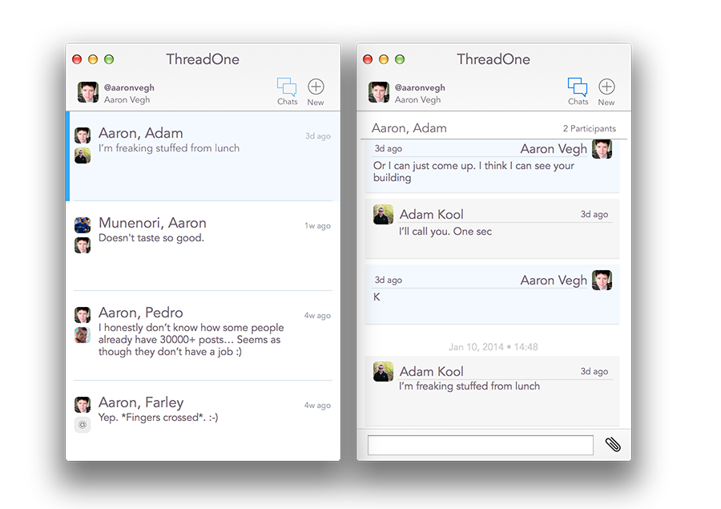

Conversations are what ThreadOne is all about. There are two primary views: the Chat view (left) and the Message view.
These views are interchanged in a single window. Select a chat in the Chat window, and the Message view will slide into the frame. The Chat button in the toolbar is inactive in the Chat view, but in the Message view, it becomes active; clicking it will return you to the Chat view.
Once in the Message view, you're ready to chat with your friends. Your view shows the most recent message at the bottom; type your message into the bottom field, and hit Return to send your message. There, you're chatting now.
You can also attach images to your messages. Click the paperclip icon next to the message field, and you'll be able to choose an image from your computer's hard drive. Once chosen, the image will be uploaded to App.Net, and become part of your message after you send it.
Images appear in messages as small thumbnails; simply click on the thumbnail to view the full size image.
Learn more about ThreadOne at our web site: ThreadOneApp.com.